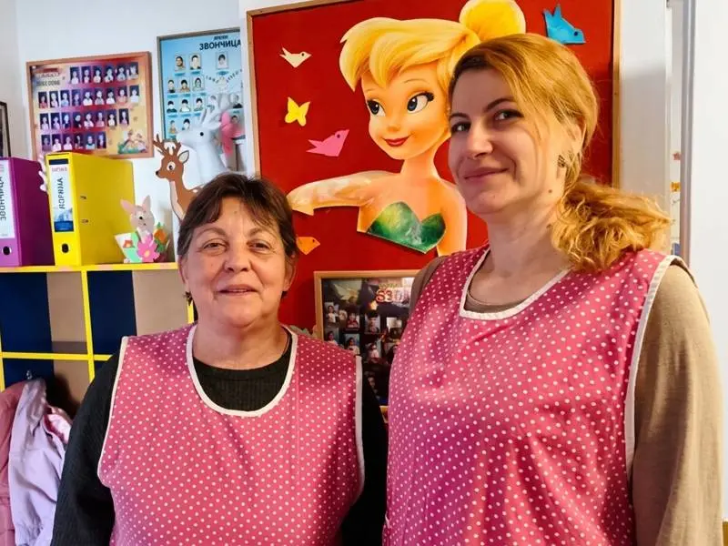
Od 12 meseciJaslice
Nega i rani razvoj, od 12 meseci do 3 godine.Blaga adaptacija, bez žurbe i bez suza.
Znamo tu tišinu u stomaku kad dete ostavljate prvi put. Ovde vas dočekuju ljudi koji pamte imena i slave male pobede.
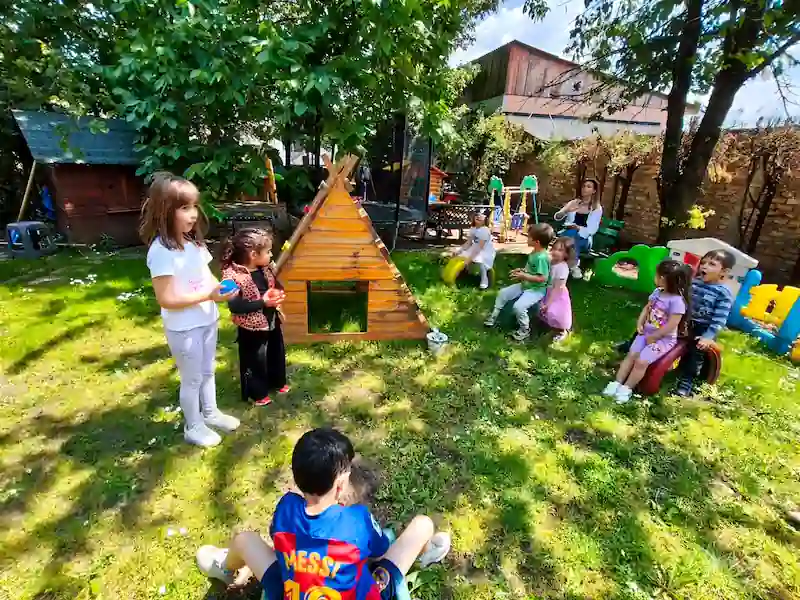
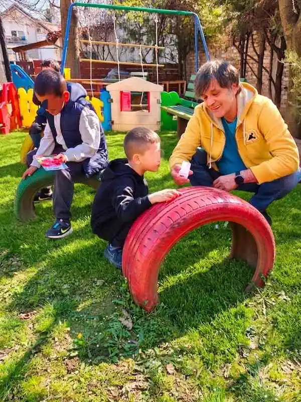
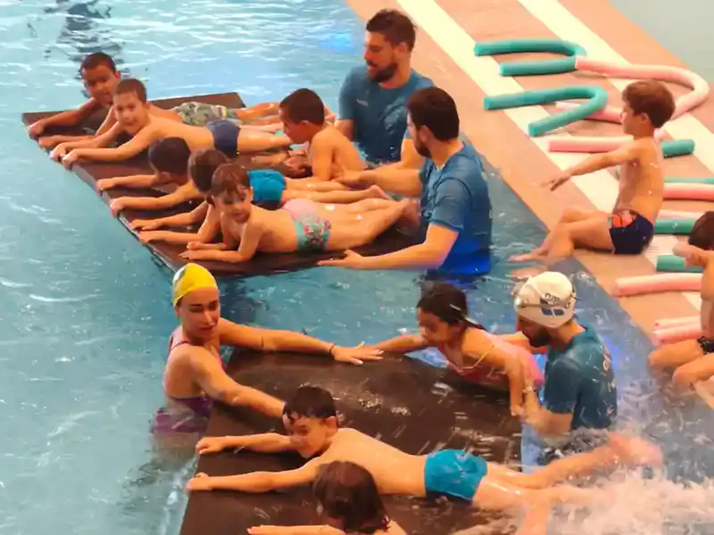
Od 1996. gradimo poverenje kroz male grupe i vaspitače koji ostaju. Roditelji se i danas pozdravljaju na ćošku kao stari prijatelji.
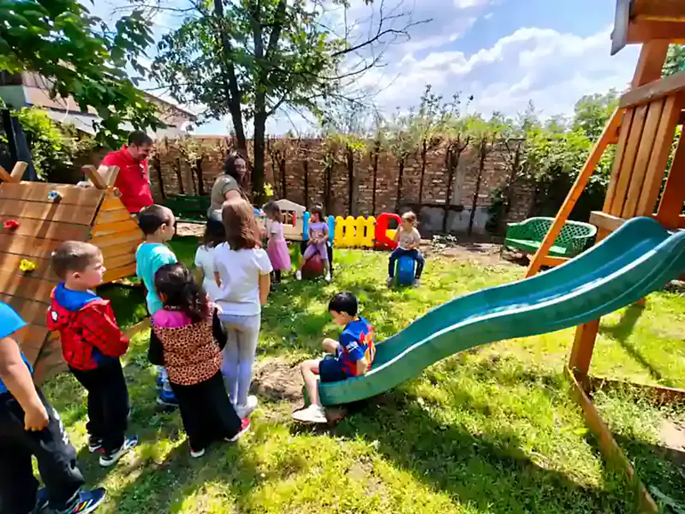
Kontrolisan ulaz, video nadzor i sigurno ograđeno dvorište.
Stručan tim sa licencama i iskrenom ljubavlju prema deci.
Svež domaći ručak i jelovnik sastavljen sa nutricionistom.
Godine uzleta i principi Marije Montessori, po standardima Ministarstva.
Kao akreditovana ustanova vodimo vas kroz subvenciju Grada Beograda, bez nerviranja na šalterima.
Uz redovne obilaske pedijatra, svako dete ima stručnu podršku od prvog dana.
Roditelj ne plaća posebno ni engleski, ni muziku, ni bazen. Jedna cena, jedan račun i jedna briga manje.
Uz subvenciju Grada i aktuelne pogodnosti tačne brojeve prođemo zajedno na razgovoru. Pozovite 062 234 344 i reći ćemo vam iskreno ima li mesta u grupi za uzrast vašeg deteta.
Jaslice, vrtićka i predškolska grupa pod jednim krovom, u mirnoj ulici. Izaberite program i pročitajte kako izgleda kod nas.

Od 12 meseciNega i rani razvoj, od 12 meseci do 3 godine.Blaga adaptacija, bez žurbe i bez suza.
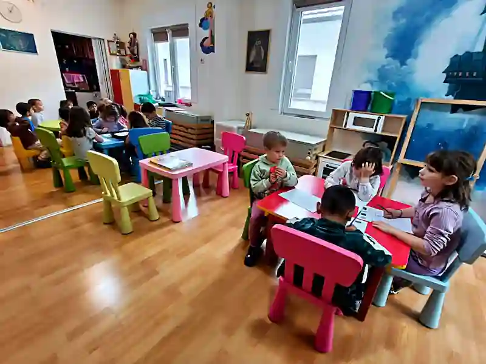
3–7 godinaGodine uzleta i principi Marije Montessori.Do 10 dece, da svako bude viđeno.
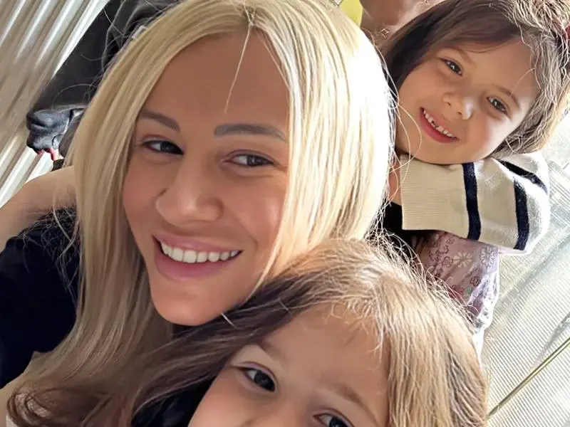
BesplatnoPesme, priče i igre, bez testa i stresa.Program finansira Grad Beograd.
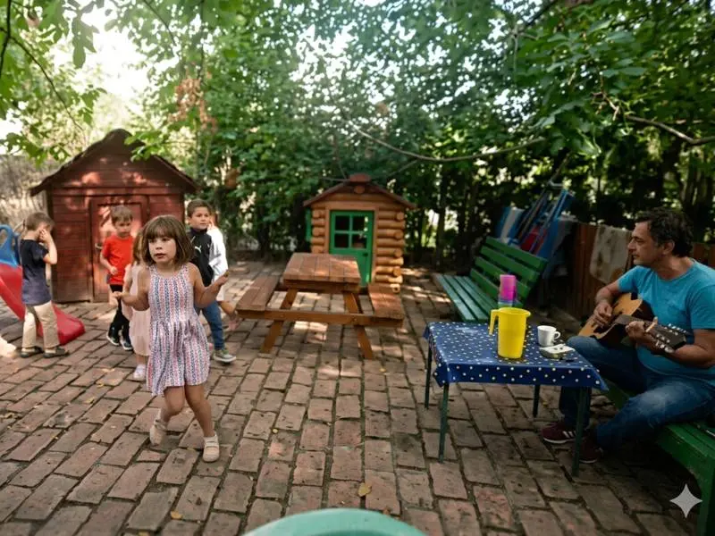
U ceniRitam, pesma i prvi nastup pred publikom.Vodi je muzički pedagog, bez doplate.
Bazen dva puta mesečno, sport dva puta nedeljno.Sve je uračunato u cenu vrtića.
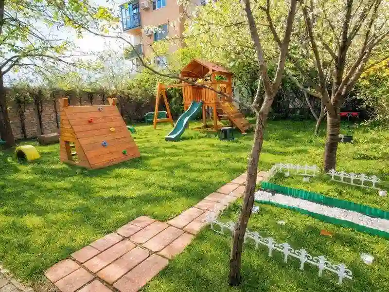
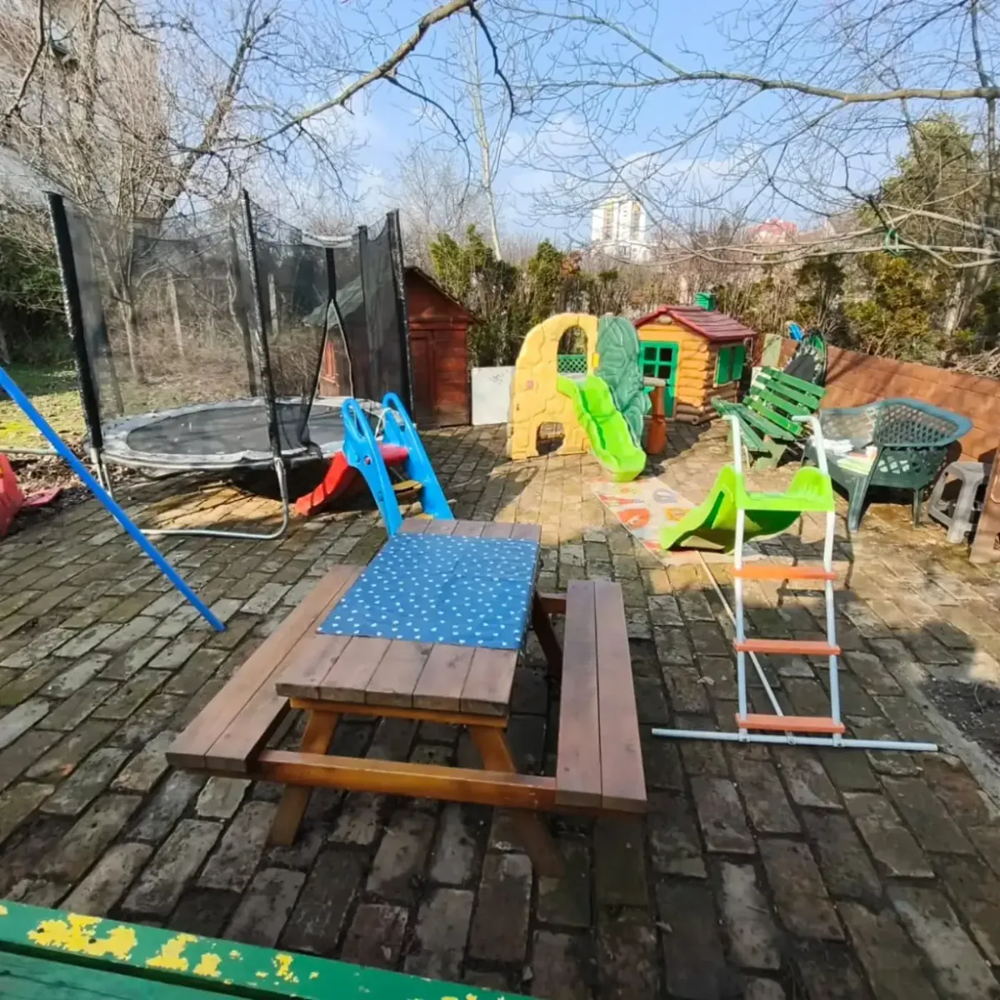
U Zemunu Gornjem gradu radimo u privatnoj kući prilagođenoj deci. Sve je u jednom nivou, a napolju je voćnjak.
Grupne sobe, trpezarija, spavaonica i toaleti uređeni su po zdravstvenim standardima i pod redovnim nadzorom sanitarne inspekcije. Kapacitet namerno držimo niskim, da svako dete ostane vidljivo.
Vaspitači, pedagozi i instruktori rade sa malim grupama. Zato svako dete ima nekoga ko ga zaista prati.
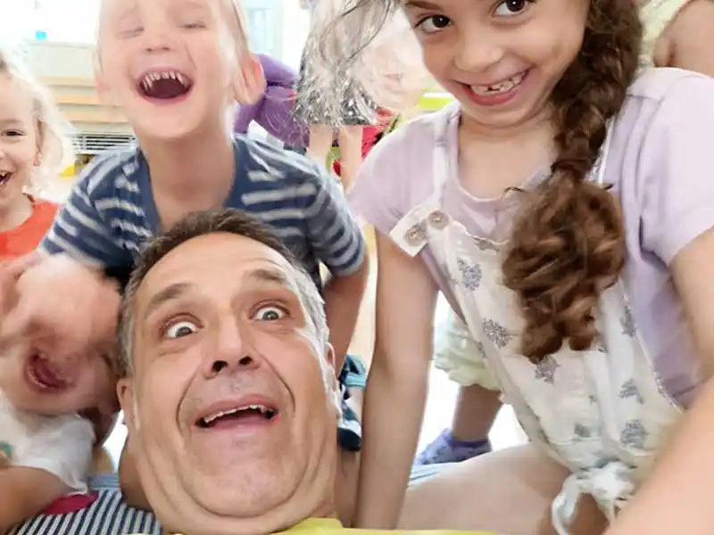
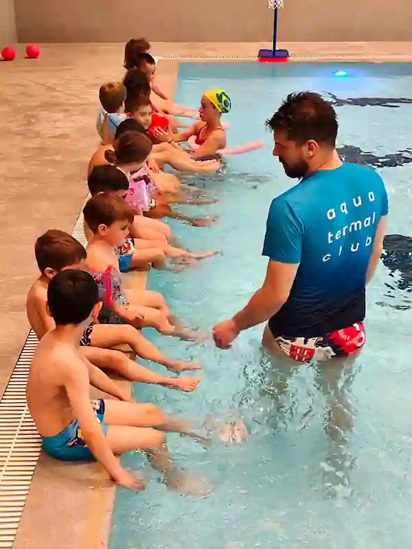
Muzička sekcija postoji od osnivanja vrtića. Vodile su je Verica Trtica, dugogodišnji direktor PU „Sima Milošević“, i Jasmina Lorin, dirigent a cappella ansambla VIVA VOX. Tu tradiciju danas nastavlja Danijel Alivojvodić.
Rasli smo zato što su nas porodice preporučivale drugima. Reč po reč, generacija po generacija.
Jedan od prvih privatnih vrtića u Zemunu, porodična ustanova. Principi Marije Montessori od prvog dana.
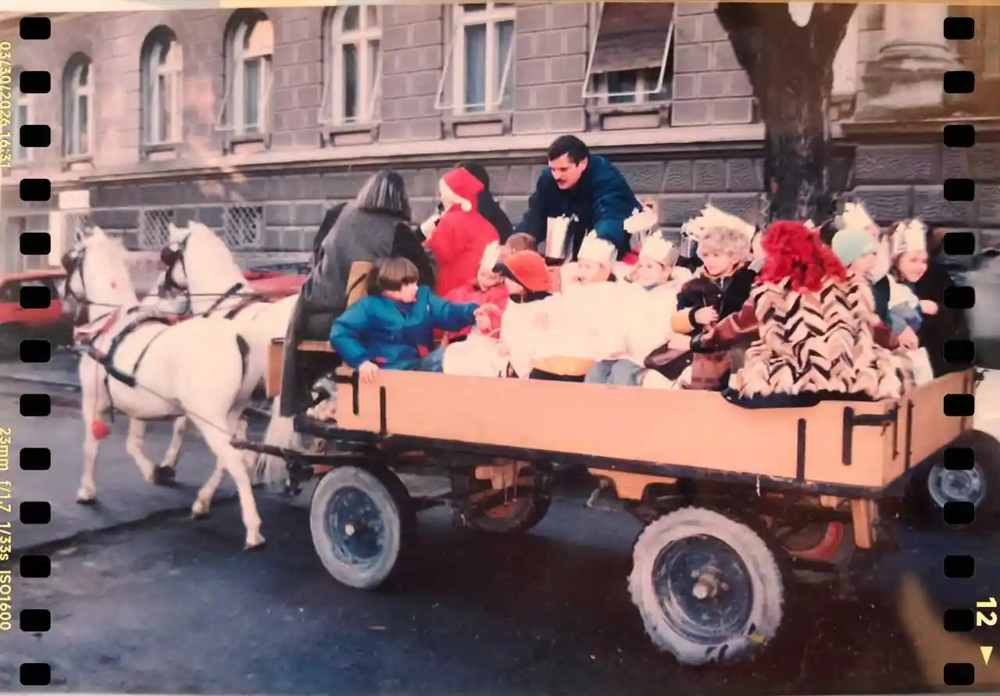
Ministarstvo prosvete potvrdilo je kvalitet programa i prostora.
Broj akreditacije
610-00-00062/2005/03
Besplatan engleski za predškolce postaje deo svakodnevice.
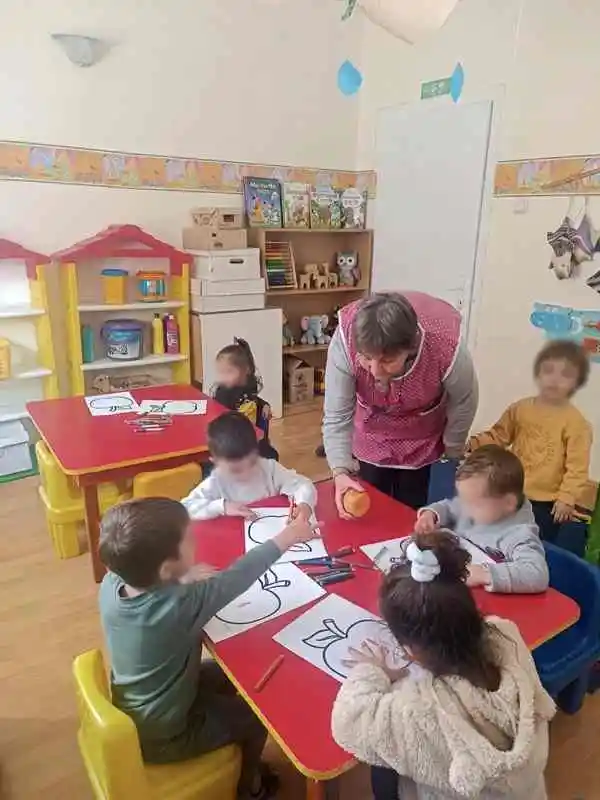
Ulazimo u sistem gradskih subvencija i pomažemo roditeljima kroz prijavu.
Akreditovani program postaje nosilac rada u predškolskoj grupi.
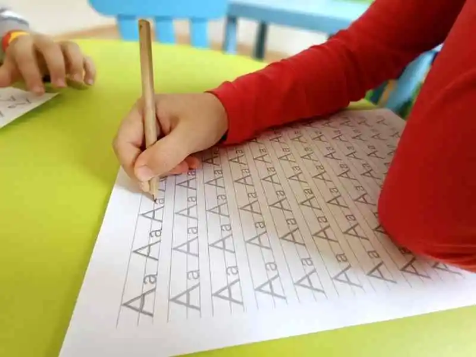
Neka deca su odrasla i danas nam vraćaju svoju decu.
1996 → danas
Tempo prilagođavamo detetu, ne obrnuto. Evo kako izgleda put do prvog dana u Zvončici.
Iskreno vam kažemo ima li mesta u grupi za uzrast vašeg deteta.
Popijete kafu, vidite sobe i dvorište i upoznate vaspitače. Bez obaveze.
Vodimo vas kroz dokumentaciju za refundaciju Grada Beograda.
Prvi dani traju kraće, pa se boravak postepeno produžava.
Prave recenzije sa Google profila vrtića Zvončica.
Prostorije, dvorište, bazen i izleti.Kliknite na fotografiju da je otvorite.
Kratko i iskreno, bez marketinške priče iz bukleta.
Pitajte nas direktnoPogledajte sobe i dvorište, upoznajte vaspitače.Bez obaveze i bez kajanja ako vam ne odgovara.
Odgovaramo u roku od sat vremena, često i brže.